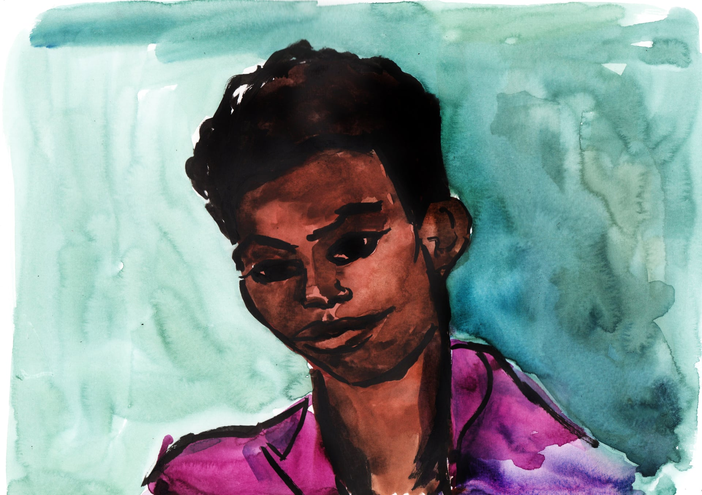

Kelly Stewart, 41, raised three children as a single mother in East London before suffering mental health problems and becoming homeless. She was beaten to death on 26 March outside a church in Barking by a man who’d argued with her boyfriend. He received a life sentence with a minimum tariff of 17 years.
Kelly Stewart
